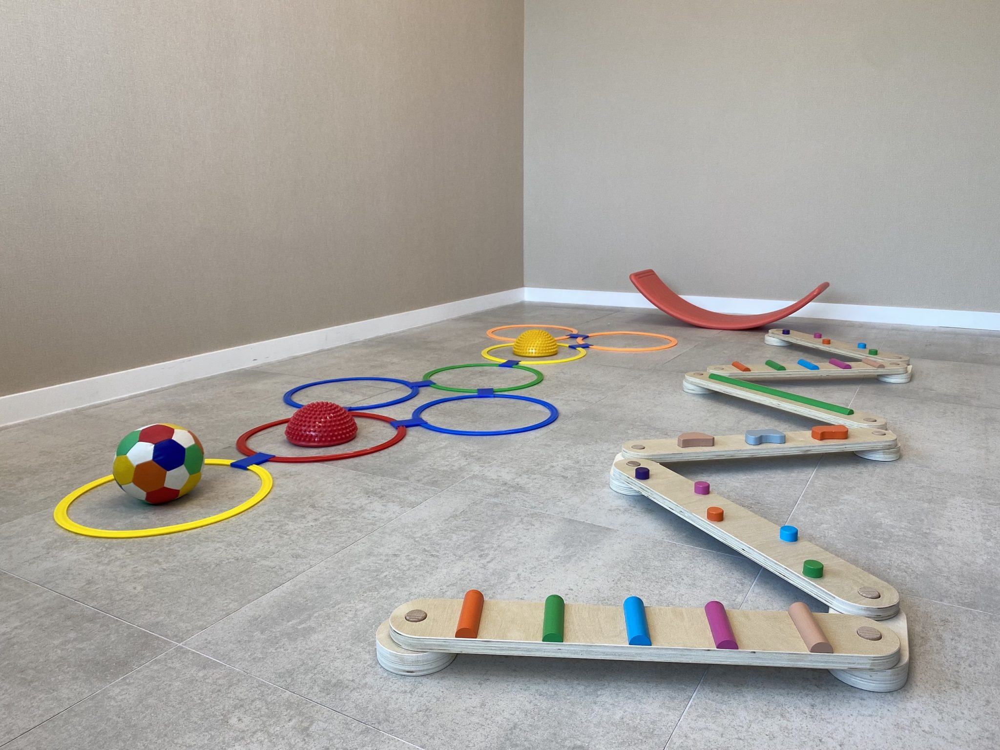

諾道團隊為你提供由預防、治療以至提升三大層面的服務。

治療
A-PLUS：不⼀樣的密集訓練班
🚀 諾道為你重新定義密集訓練班
A-PLUS是諾道的皇牌課程：8⼤特點，為孩⼦提供不⼀樣的密集訓練班！
🔶 ⾔語治療師＋註冊社⼯策劃及帶領
🔶 ⾼⼈⼿比例(1對2)，確保你的孩⼦每分每秒都有所得著
🔶 每星期30分鐘1對1⾔語治療
🔶 每星期30分鐘1對1特別遊戲時間
🔶 每⽉家長觀課，與你⼀同⾒證孩⼦的進步
🔶 每⽉詳細家長諮詢(可選⾯談/zoom)
🔶 個別訓練由⼩組同⼀位⾔語治療師/註冊社⼯負責，確保質素及⼀致性
🔶 每次課後均會和家長傾談當節重點及跟進⽅向
🌟 ⾔語治療師直接負責每⽇135分鐘訓練🌟
涵蓋範疇：語⾔＋認知＋社交＋讀寫＋⼤⼩肌＋⾃理＋情緒
⭐想了解更多？致電或  6532 8821，將有專人為你提供詳情。
6532 8821，將有專人為你提供詳情。
個別⾔語治療
諾道提供全⾯的⾔語治療評估、診斷及跟進訓練，範疇涵蓋語⾔障礙(語⾔理解、語⾔表達)、⾔語障礙(發⾳、聲線、流暢度)、社交溝通障礙以及餵食和吞嚥障礙。
我們承諾整個跟進過程均由同⼀位⾔語治療師直接負責，確保你得到⾼質素和⼀致性的⾔語治療服務。
🔶 持3個⽉內⾔語治療評估報告可免評估
🔶 每次治療後均會和家長傾談當節重點及跟進⽅向
⭐想了解更多？致電或
6532 8821，將有專人為你提供詳情。
綜合能力提升班
🔶 ⾔語治療師諮詢，註冊社⼯帶領，跨專業協助⼩朋友提升各項能⼒
🔶 ⾼⼈⼿比例(1對2)，確保你的孩⼦每分每秒都有所得著
🔶 每期均由同⼀位註冊社⼯負責，確保質素及⼀致性
🔶 每次課後均會和家長傾談當節重點及跟進⽅向
涵蓋範疇：語⾔＋認知＋社交＋讀寫＋⼤⼩肌＋⾃理＋情緒
⭐想了解更多？致電或
6532 8821，將有專人為你提供詳情。
諾道非凡個別訓練
🚀 為你把個別訓練帶到另⼀個層次
將⾔語治療及綜合能⼒訓練結合，每次課堂先由⾔語治療師提供30分鐘個別⾔語治療，緊接由註冊社⼯透過45分鐘個別訓練將前者所學加以鞏固，同時提升其他發展範疇。
🔶 透過1對1形式針對性提升孩⼦能⼒
🔶 每期均由同⼀位⾔語治療師及註冊社⼯負責，確保質素及⼀致性
🔶 每次課後註冊社⼯均會和家長傾談當節重點及跟進⽅向
🔶 每期詳細家長諮詢由⾔語治療師負責(可選⾯談/zoom)
涵蓋範疇：語⾔＋認知＋讀寫＋⼤⼩肌＋⾃理＋情緒
⭐想了解更多？致電或
6532 8821，將有專人為你提供詳情。
生活自理班
1️⃣ 次次食SNACK都要搵人開包裝袋？
2️⃣ 飲包奶又篤唔到枝飲管落去？
2️⃣ 有鼻涕唔識抹，鞋又著錯左右？
深明父母的不容易，諾道團隊特別打造生活自理班，針對小朋友日常自理背後的底層能力作提升。
2小時課程循序漸進式由道具練習至真實物件操作，全面提升相關身體四肢協調及認知能力。
⭐想了解更多？致電或
6532 8821，將有專人為你提供詳情。
諾道感官探索班
感官系統是認知發展的基礎，幼兒透過接收身邊的各種感官刺激去探索世界。通過在發展早期提供豐富多樣的感官體驗，促進孩⼦對於外界的認知和理解，從⽽提升處理環境信息的能⼒，同時刺激各個範疇的發展。
諾道的感官探索班為幼兒的觸覺、前庭平衡覺、視覺、本體覺等多個感官⻆度提供相應刺激，促進幼兒的認知、⼤肌及⼩肌、社交情緒以及語⾔發展。
✅ 主題感官盤＋感統活動
✅ 多感官學習，提升感覺訊息處理能⼒
✅ 促進認知、⼤肌及⼩肌、社交情緒以及語⾔發展
✅ 促進⼩⼿肌發展，提升執⾏精細動作能⼒，打好執筆寫字基礎
✅ 培養創造⼒、提升專注、穩定情緒
⭐ 每⽉推出不同主題，敬請留意IG/FB發佈的最新消息！
⭐想了解更多？致電或
6532 8821，將有專人為你提供詳情。
諾道藝術探索班
諾道團隊深信每一位小朋友都有快樂探索的權利。唯現實中，父母為有特殊教育需要的子女尋找興趣班時往往障礙重重⋯⋯常常聽到家長訴說子女因未能遵守規則，試堂後被勸退；又或因未能理解及跟從指示，完成不了作品，由老師代筆⋯⋯
諾道為特殊教育需要小朋友而設的藝術探索課程，以包容及接納態度讓小朋友探索不同顏色、物料，製作獨一無二的作品；享受創作過程，體驗藝術的無限可能。
5大特點，將探索學習的權利交回小朋友手上：
✅ 高人手比例(1對3)
✅ 兒童為本，相信每位小朋友都有自己的天賦和能力等待被看見
✅ 每節與小朋友回顧過程，學習欣賞自己、整理內在經驗
✅ 重點在於過程中探索嘗試，不為追求完美作品，不為完成作品而催促小朋友
✅ 豐富素材，讓創意萌芽
⭐ 每⽉推出不同主題，敬請留意IG/FB發佈的最新消息！
⭐想了解更多？致電或
6532 8821，將有專人為你提供詳情。
諾道感統大肌訓練課程
📣 全新空間🤩 全新課程😎
5大特點 為孩子打造非一般感統大肌訓練空間
✅ 嶄新器材，令小朋友樂而忘返
✅ 為本體覺+前庭平衡覺+觸覺三大感覺系統提供相應刺激
✅ 針對提升反應能力+執行能力
✅ 高人手比例(1對3)，確保孩子安全
✅ 每次課後均會和家長傾談當節重點
⭐ 每⽉推出不同主題，敬請留意IG/FB發佈的最新消息！
⭐想了解更多？致電或
6532 8821，將有專人為你提供詳情。